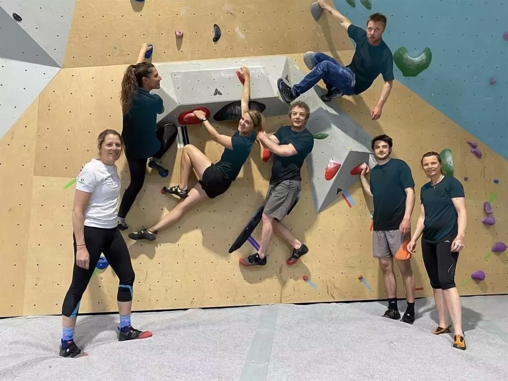

Des activités ludiques et éducatives pour éveiller la curiosité et l'imagination des plus jeunes.
Des expériences dynamiques et enrichissantes pour développer l'esprit d'équipe et la confiance en soi.
Des moments de détente et de convivialité pour se ressourcer et partager des passions.
Bienvenue chez La Grimpette , un club d'escalade fondé en 2020 par deux amis d'enfance, Julie Morel et Maxime Dupont . Passionnés de grimpe et désireux de partager leur amour pour ce sport, ils ont créé un lieu accessible à tous, des enfants aux adultes, dans une ambiance chaleureuse et détendue. Leur vision : offrir un espace où chacun peut s’amuser, progresser et repousser ses limites, sans se prendre trop au sérieux.
L'équipe de La Grimpette est composée de coachs expérimentés et d’un personnel accueillant, tous unis par une même passion pour l’escalade. Que vous soyez débutant ou grimpeur aguerri, nos moniteurs sont là pour vous accompagner à chaque étape. Ils animent des cours adaptés à tous les niveaux , ainsi que des stages pour les enfants, afin de leur transmettre les bases de l'escalade sur voie et du bloc en toute sécurité et dans la bonne humeur.
Notre salle propose des voies pour tous les niveaux , qui sont régulièrement renouvelées, offrant des défis pour tous. Que vous veniez pour vous dépasser ou simplement pour grimper entre amis, vous trouverez des parcours adaptés à vos envies. Un espace dédié aux enfants permet aux plus jeunes de découvrir l’escalade de manière ludique et sécurisée.
Au-delà de la pratique sportive, La Grimpette se distingue par son ambiance conviviale . Ici, pas de pression, juste le plaisir de grimper ensemble et de partager de bons moments. Après l'effort, détendez-vous dans notre espace café pour discuter de vos ascensions ou simplement vous relaxer.
Nous organisons également des événements réguliers : soirées à thème, compétitions amicales, rencontres avec des grimpeurs expérimentés, pour dynamiser la communauté et créer des moments de partage.
Que vous soyez un grimpeur passionné ou un curieux souhaitant découvrir l'escalade, La Grimpette vous ouvre ses portes pour vivre une expérience unique. Venez grimper, partager et découvrir un lieu où la convivialité est aussi importante que la performance !
